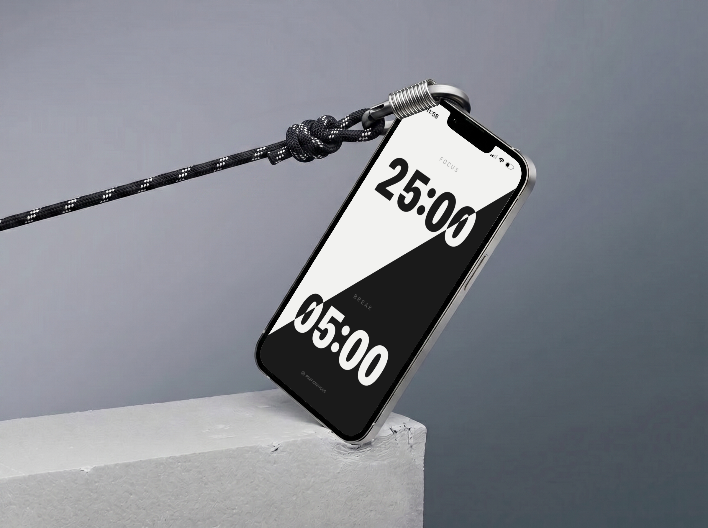

See It In Action


A gesture-based focus timer for iPhone.
Tilt to start. Zero taps required.

Tilt left to focus. Tilt right to break. Rotate 180° to switch modes. Shake to reset. Your phone already knows these movements—no learning curve.
Block distracting apps during focus sessions. They automatically unblock when you take a break. No willpower required.
See when you focus best. Track completion rates, session length, and patterns over time. Your productivity data, visualized clearly.
Tilt your phone to the left (landscape). The timer starts immediately. Just make sure rotation lock is off in Control Center first.
Check that rotation lock is turned off. Swipe down from the top-right corner to open Control Center and tap the lock icon to disable it.
It uses iOS Screen Time to block selected apps during focus sessions. Apps automatically unblock when you take a break. Screen Time needs to be enabled in Settings.
Go to Preferences in Tilt, tap "Unlock Pro," then tap "Restore Purchases." Your subscription is tied to your Apple ID, so it'll restore automatically.
Go to iPhone Settings, tap your name at the top, then Subscriptions → Tilt → Cancel Subscription. You'll keep Pro access until the end of your billing period.
Nope. No accounts, no cloud sync, no data collection. Everything stays on your device.
Email us at code@roydsantiago.com. We usually respond within 24 hours.